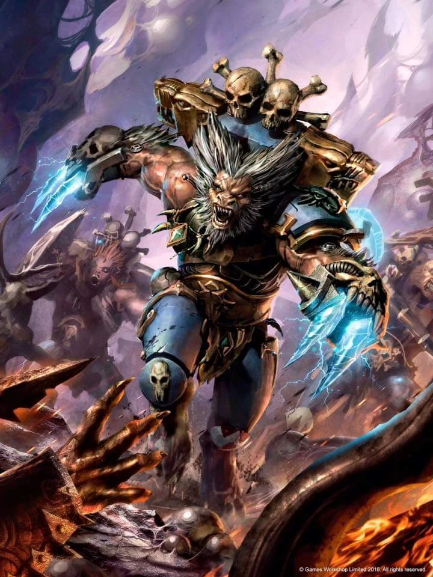

Wulfen
| Wulfen | |
|---|---|
 A Wulfen of the Thirteenth Great Company, from a skald's record of the Wolftime Artwork © Games Workshop | |
| Type | Mutated Space Marines of the Space Wolves |
| Cause | The Canis Helix in the gene-seed of Leman Russ |
| First recorded | Great Crusade (M30), in Fenrisian legend at the founding of the VI Legion |
| Formation | Thirteenth Great Company (Great Crusade to c. 004–014.M31); since 999.M41 attached to the Great Companies |
| Homeworld | Fenris |
| Allegiance | Imperium of Mankind; Space Wolves |
| Notable | Bulveye, Wolf Lord of the Thirteenth; Bran Redmaw's Great Company |
| Notable battles | |
| Burning of Prospero (004.M31), Battle of Nurades (999.M41), Hunt for the Wulfen (999.M41), Fall of Cadia (999.M41) | |
The Wulfen are Space Wolves who have succumbed to the Curse of the Wulfen and become savage, lupine mutants. The curse lies in the Canis Helix, the genetic sequence drawn from the gene-seed of Leman Russ that gives the Space Wolves their wolf-like senses and ferocity. Some aspirants fall to it during their making; others carry it within them for centuries and are overcome in the heat of battle. The Space Wolves call it the Wolf Within.[1][2]
During the Great Crusade those touched by the curse were gathered into the Thirteenth Great Company, which vanished into the Eye of Terror in the 31st millennium on a hunt that lasted ten thousand years. Its Wulfen returned in the last days of the 41st millennium, an event many Space Wolves read as the beginning of the prophesied Wolftime, when Russ will come back. The return set off the Hunt for the Wulfen and a near-war with the Dark Angels in 999.M41.[1][3]
The legend of Wulfen
[edit]Fenrisian sagas tell that when the Emperor came to Fenris, the reavers of Leman, King of the Rus, were all too old to become Space Marines, but would not be refused. Russ gave them the Cup of Wulfen to drink. The first to drink was the jarl Wulfen, the only man ever to have beaten Russ in single combat save for Russ himself, who secretly hated the primarch for his later defeat. The spirit of the cup is said to have made his outer form match his inner evil, and he became a monstrous beast; Russ killed him with one blow. Of the hundreds who then drank, almost forty survived, and Russ made them a company of their own. The sagas are a religious allegory rather than a record; the Chapter's Wolf Priests teach them as such.[1]
The Canis Helix
[edit]An aspirant who has been chosen drinks the Canis Helix, the activating draught for his first implants, and is then sent into the wilds of Fenris for the Trial of Morkai, which tests whether he can keep the beast within him under control. Those who fail become Wulfen and remain in the wild. Those who return receive their remaining organs and, over the following months, change: their senses sharpen, their canine teeth lengthen into fangs, and their body mass grows by up to four-fifths. Most of those who will fall do so in this period. The rest remain at risk for the remainder of their lives, and the Wolf Priests are charged with watching them.[2]
The same instability is believed to have doomed the Wolf Brothers, a Chapter raised from the VI Legion in the Second Founding in the late 31st millennium under Chapter Master Beor Arjac Grimmaesson, with a homeworld of its own, Kaeriol. It was disbanded when its gene-seed proved too unstable, and some of its warriors turned renegade rather than be destroyed. The Space Wolves have had no officially recognised successors since.[2][a]
The Thirteenth Great Company
[edit]During the Great Crusade, warriors touched by the curse were banded together in the Thirteenth Great Company, where their ferocity could be brought to bear. Its Wolf Lord, at least in the 41st millennium, was the ancient Bulveye, Axeman of Russ. In the Horus Heresy the company went into the Eye of Terror on a great hunt against the Traitor Legions and did not return; it was believed lost. In the 41st millennium its warbands began to appear at the edges of the Eye. Later in the millennium Bulveye and a warband of the Thirteenth helped the young Ragnar Blackmane, then serving in the Wolfblade, to recover a relic.[1][b]
Return in 999.M41
[edit]In the last days of the 41st millennium the Wulfen of the Thirteenth emerged from Warp storms to save the Great Company of Harald Deathwolf at the Battle of Nurades, and were sent to Fenris for judgement. Before the Great Wolf Logan Grimnar, the Wolf Priest Ulrik the Slayer declared their return an omen that Russ's return was near. Ragnar Blackmane argued that every Wulfen must be gathered before the Inquisition found them, and the Great Companies set out across the galaxy on the Hunt for the Wulfen, recovering them from daemon worlds and warzones. The hunt brought the Dark Angels and their allies to Fenris in fear of what the Space Wolves were hiding, and the two Chapters came close to open war in 999.M41. Wulfen fought in the Fall of Cadia in the same year.[3][1]
Era Indomitus
[edit]Since the opening of the Great Rift the Wulfen have fought beside the Great Companies as a recognised part of the Chapter. Bran Redmaw, the "Curs'd Lord", leads the Great Company with the most battle-brothers who carry the curse, and is regarded with suspicion by the other Wolf Lords. The Ecclesiarchy and the Inquisition have demanded explanations; the Space Wolves have given none.[3]
Timeline
[edit]| Date | Event |
|---|---|
| M30 | Legend of the Cup of Wulfen; formation of the Thirteenth Great Company |
| 004.M31 | Burning of Prospero |
| 005–014.M31 (estimated) | The Thirteenth enters the Eye of Terror |
| Late M31 | Wolf Brothers raised and later disbanded |
| Late M41 | Warbands of the Thirteenth seen at the Eye; Bulveye aids Ragnar |
| 999.M41 | Battle of Nurades; Hunt for the Wulfen; Fenris crisis; Fall of Cadia |
| M42 | Wulfen fight beside the Great Companies |
See also
[edit]Notes
[edit]References
[edit]- ^ a b c d e King, William. Space Wolf (novel). Black Library. Taylor, Geoff. Wolf's Honour (novel). Black Library.
- ^ a b c Thousand Sons (novel) by Graham McNeill. Codex: Space Wolves (5th Edition), pp. 10, 35. Games Workshop.
- ^ a b c Codex: Space Wolves (3rd Edition), pg. 15. Games Workshop. Codex: Space Wolves (2nd Edition), pp. 6, 38, 40. Games Workshop.